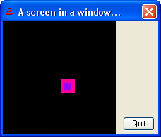
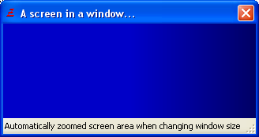

OpenWindowedScreen()
语法
Result = OpenWindowedScreen(WindowID, x, y, Width, Height [, AutoStretch, RightOffset, BottomOffset [, FlipMode]])概要
Open a new screen area according to given parameters on the given Window, which must be opened before using OpenWindow(). InitSprite() has to be called successfully before using this command. The "windowed screen" is able to use the hardware acceleration the same way than full-size OpenScreen() function. As a window is opened, the window events have to be processed with WindowEvent() to have the correct behaviour. All the events needs to be processed before flipping the buffers (see the examples below).
参数
WindowID The window to use to create the screen. WindowID() can be used to get a valid window identifier. x, y The screen position in the specified window, in pixels. Width, Height The screen resolution, in pixels. AutoStretch (optional) If set to #True, then the screen area will automatically resize (and its contents will be zoomed to new screen size) when the window size changes. RightOffset, BottomOffset (optional) Define the margin on the right and bottom of the window, in pixels (for statusbar for example). FlipMode (optional) Sets the screen synchronization methods used when flipping buffers (also known as 'Vertical blank synchronization'). It can have one of the following values: #PB_Screen_NoSynchronization : disable synchronization #PB_Screen_WaitSynchronization : enable synchronization (default value) #PB_Screen_SmartSynchronization: enable synchronization, with a CPU saver routine when the program doesn't consume all the CPU time (full screen mode only)Waiting for the screen synchronization allows the flip to be perfect (no 'tearing' or other visible artifacts) because the flip is performed when the screen has been fully drawn (and when the screen spot is outside of visible screen area). This also link the flip frequence to the actual screen refresh, ie: for 60Hz screen it could have at most 60 flip per seconds, etc.
The opened screen is created with 2 video buffers to allow you to do double buffering, especially useful for games. The buffers can be manipulated with the FlipBuffers() function.
返回值
Nonzero if the screen has been successfully opened, zero otherwise.
备注
Only one windowed screen can be opened at one time. The screen dimension can't be greater than the window size or artefacts can occurs.
Example: Fixed screen size with gadgets
If InitSprite() = 0 MessageRequester("Error", "Can't open screen & sprite environment!", 0) End EndIf If OpenWindow(0, 0, 0, 220, 160, "A screen in a window...", #PB_Window_SystemMenu | #PB_Window_ScreenCentered) ButtonGadget(0, 170, 135, 45, 20, "Quit") If OpenWindowedScreen(WindowID(0), 0, 0, 160, 160) CreateSprite(0, 20, 20) If StartDrawing(SpriteOutput(0)) Box(0, 0, 20, 20, RGB(255, 0, 155)) Box(5, 5, 10, 10, RGB(155, 0, 255)) StopDrawing() EndIf Else MessageRequester("Error", "Can't open windowed screen!", 0) End EndIf EndIf direction = 2 Repeat ; It's very important to process all the events remaining in the queue at each frame ; Repeat Event = WindowEvent() Select Event Case #PB_Event_Gadget If EventGadget() = 0 End EndIf Case #PB_Event_CloseWindow End EndSelect Until Event = 0 FlipBuffers() ClearScreen(RGB(0, 0, 0)) DisplaySprite(0, x, x) x + direction If x > 140 : direction = -2 : EndIf If x < 0 : direction = 2 : EndIf Delay(1) ForEver
Example: Screen with enabled auto-stretch and bottom-offset feature
If InitSprite() = 0 MessageRequester("Error", "Can't open screen & sprite environment!", 0) End EndIf If OpenWindow(0, 0, 0, 320, 200, "A screen in a window...", #PB_Window_SystemMenu | #PB_Window_SizeGadget | #PB_Window_ScreenCentered) CreateStatusBar(0, WindowID(0)) AddStatusBarField(320) StatusBarText(0, 0, "Automatically zoomed screen area when changing window size...") If OpenWindowedScreen(WindowID(0), 0, 0, 320, 200, #True, 0, 20) CreateSprite(0, 50, 50) ; Create an empty sprite, will be whole black Repeat ; It's very important to process all the events remaining in the queue at each frame ; Repeat Event = WaitWindowEvent(10) If Event = #PB_Event_CloseWindow End EndIf Until Event = 0 FlipBuffers() ClearScreen(RGB(0, 0, 200)) ; A blue background DisplaySprite(0, 10, 10) ; Display our black box at the left-top corner DisplaySprite(0, 260, 10) ; Display our black box at the right-top corner ForEver Else MessageRequester("Error", "Can't open windowed screen!", 0) EndIf EndIf
For a more detailed example look at
示例
WindowedScreen.pb
参阅
OpenScreen()
已支持操作系统
所有